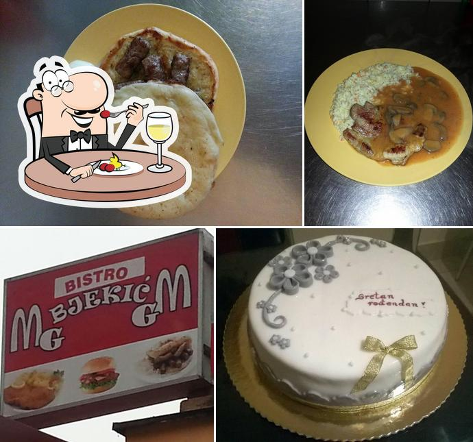
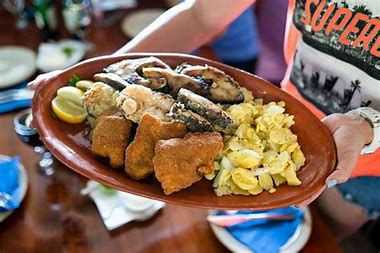
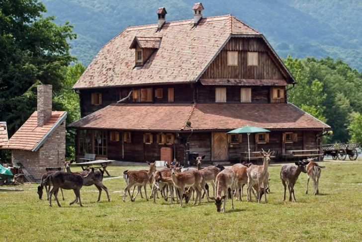
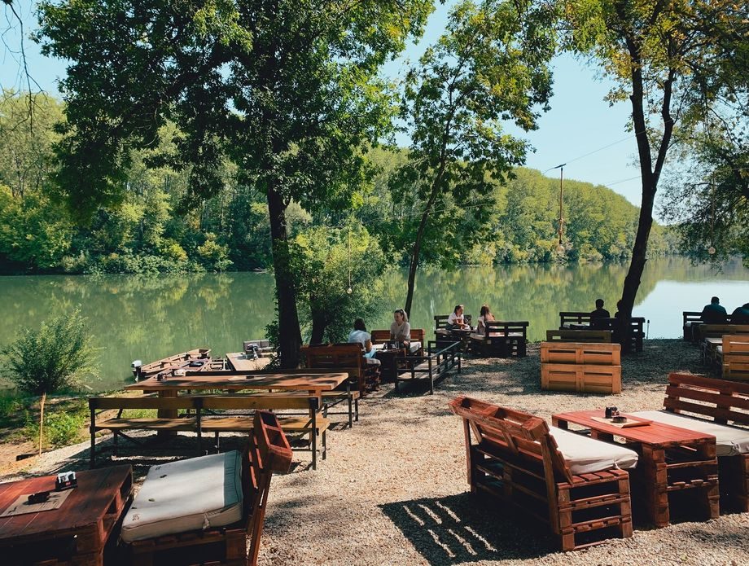

Bistro Bjekić
Zagarantirana ugodna atmosfera te vrhunsjka hrana.

Restoran Štuka
Razni specijaliteti od svježe ribe i tradicionalne kuhinje.

Korablja Tišinić
Jedinstveno iskustvo uz domaću Banijsku kuhinju u društvu raznih divljih i domaćih životinja te ljubaznog osoblja.

Restoran Mlinski kamen
Uživajte u fantastičnoj hrani uz samu obalu rijeke Kupe!